Can your agent play Doom like an expert, in real time?
Four Freedoom levels on Ultra-Violence from a pistol start. The game runs at 35 tics a second whatever your agent does, and it sees only what is on screen. Each map is scored with Doom's own tally: kills, secrets, and the exit against par. 100% is every monster, every secret and the exit under par on every map: elite human play. An expert who maxes every map at twice par scores 83%.
| # | Entrant | Spinal Score | Kills | Secrets | Exits | Deaths | Decision p95 | Missed tics | On intent | Date |
|---|
Not our home turf
Spinal was built on the deathmatch arena, which isn't scored. These levels are new to every entrant, Spinal included.No wallhacks
Objects only while they're on screen, as a perfect detector would see them; the agent remembers the rest. The layout is known, like a player with the automap. Reading the game's files isn't allowed.Real time
The game never waits. Decision latency and the tics an agent missed are on the board.Stays hard
Built so that no agent today comes close. If an entry ever passes 80% (the dashed line), the next season gets harder: new levels, fewer senses.Beat Spinal
Any architecture: a model per move, a decision API, a vision model on the pixels, your own controller.
Implement act(state, tic) (buttons) or pick(state) (a skill):
uv tool install "relaymcp[play] @ git+https://github.com/brennengreen/spinal" spinal arena run --agent plugin:my_agent.py:Agent --maps MAP01 # a quick try spinal arena run --board reflex --agent plugin:my_agent.py:Agent --name "My agent"
Model league
Spinal stays fixed; your model compiles its tactics from the standard intent. Any Ollama model or any OpenAI-compatible API:
spinal arena run --board models --agent compiled \ --model openai:<model> # or ollama:<model>
Then open a pull request with the JSON it writes under leaderboards/. CI recomputes every
score from its tally; maintainers re-run the top entries.